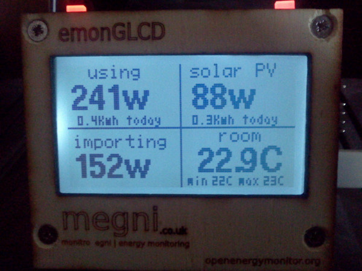
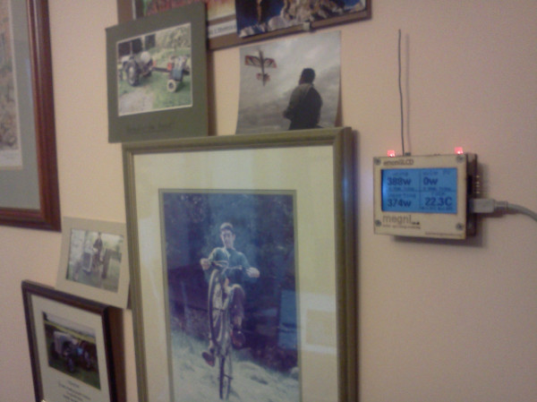
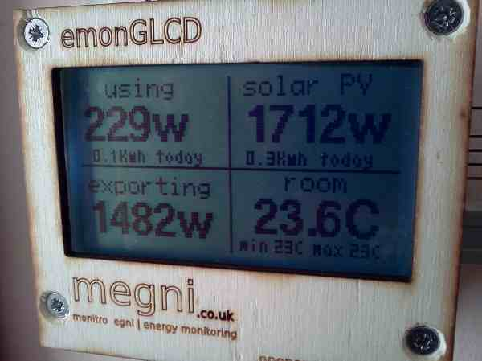
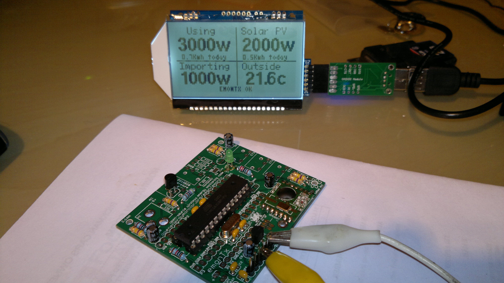
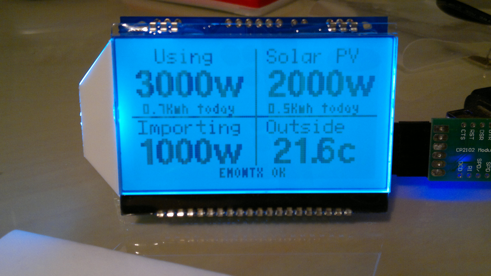

Hi All,
After reading most of the site several times I have come up with a plan to monitor my house consumption and PV system output (2.94 KWp With SunnyBoy 3000HF inverter). Current "system" is British Gas energy smart to monitor the house consumption (in the kichen) and Sunny Explorer to monitor the PV output running on a PC (in study) Not a real user friendly set up system at the moment.
Luckily my PV installers fitted an additional distribution board and split the meter tails so I can use 2 separate CT's for house current draw and PV output, so onto my plan :
- EMONTX with 2x CT inputs and 9v AC input, modified to to use the 9v AC to supply the power to the unit.
- Kitchen Display built using JeeNode & LCD Display kit + RTC clock plug (instant and Daily total readings displayed)
- Instead of having emonbase my plan (not sure if this is possible but hey worth a punt) was to use a JeeLink plugged into my Windows Home server which I would like to take advantage of WHS webserver to plot the Usage / Generation data.
My original plan was to use a PIC based system with PICbasic which I have used a lot but then I found this site and the Arduino platform looks great so hence my plan.
A little bit about me
Any thoughts or comments gratefully received !
Re: Newbie - OEM Plan.... (RevA)
Hi Simon,
I too have a 2.9Kw solar PV system. I have a monitoring system exactly as you have described. I am in the process of documenting the build. I will post up a link to the page when I'm done.
I have an emonTx with 2 x CT's, one monitoring PV gen and the other monitoring grid import/export, the reading goes negative when I'm exporting. I also have a 9V AC-AC adapter to monitor voltage, this allows the system to determine the direction of the current as well as PF and voltage. I use an emonBase to post to an installation of emoncms. I've not done it myself but it is definetly possible to use a JeeLink to receive data data,. The emonTx is basicly a JeeNode with energy monitoring circuits strapped on. You will need to use an 868Mhz module with the emonTx; we can supply this.
I also have a living room display using an emonGLCD. The tri-colour LED's on the unit turn green to inidicate exporting anfd red to indicate importing from the grid. My code for the GLCD is availalbe here: https://github.com/openenergymonitor/EmonGLCD. See below for photos. The emonGLCD is basicly a JeeNode+graphics board all on one board and with a laser cut plywood fascia.
  
The dashboard is still in development (the unit pricres are incorrect). The dashboard is built on emoncms, the source code for the latest version (V3) which includes the dashboards has not yet been released. We'r putting some finishing touches to it, Trystan should be releasing it onto the openenergymonitor git hub in the next few weeks.
We are in the process of setting up an online shop to sell the emonTx, emonBase and emonGLCD in kit form. We are on schedule to open in the near year. However we do have plenty of kits to the moment: If your interested see: http://openenergymonitor.org/emon/emontx/buy and drop me an email glyn.hudson@openenergymonitor.org
Good luck,
Re: Newbie - OEM Plan.... (RevA)
Glyn that looks absolutely amazing !!
My monitor is based on emon but all webiste is done by me cause i wanted to be able to customize it.
I was thinking, can I call an URL from inside my emon_upload.php file that gets the information from the arduino, and pass the parameters so I can use in parallel emoncms2 ??
so basically, I have arduino calling ww.website.com/emon_upload.php?P=123&A=234..etc...
and from that file i would like to call emoncms so it get the values also.
how can i pass the parameters to emoncms2 from inside a php?
thanks a lot !!!
Re: Newbie - OEM Plan.... (RevA)
Thanks! It's Trystan who has been leading on emoncms developments
That shoud be possible, posting to emoncms is just a http GET request. E.g http://(addres of emoncms server)/emoncms/api/post?apikey=xxxxxxxxxxxxxxxxxxxxxxxxxxxxxxx'write API key goes here'&json={power:252.4,temperature:15.4}
Instructions for posting to emoncms can be found here: http://openenergymonitor.org/emon/node/127
Intallation instracutions are here: http://openenergymonitor.org/emon/node/150
Re: Newbie - OEM Plan.... (RevA)
Hi, thanks for your answer, but i dont think i can do a GET request from inside a php file.
so the idea is to once my php file has done all the work, make something like a GET request to emoncms but from inside the php.
Is this possible? any idea how? ive spend countless hours trying but no success.
Re: Newbie - OEM Plan.... (RevA)
Hi Glyn,
That looks really good !
Your display format is EXACTLY what I'm looking for - I'll have a look at your sketch.
Good news about the JeeLink, for me having the Nanode is a bit daft when I have a HP server running WHS on server 2003 that can quite easily do a bit of data logging for me, it also has IIS so gives me a server platform on which to host emoncms.
Regarding a kit, don't really need a full kit as I can get my hands on most passives either from my garage stash or Work, I would however be interested in a "bare bones" set of bits. I'll drop you an e-mail with my requirements. Up to me neck in decorating at the moment so time is limited for anything more interesting
Re: Newbie - OEM Plan.... (RevA)
Hello Sergegsx
Yes you can do this using php curl:
$url = 'http://yourserver/emoncms2?apikey=xxxxxxxxxxxxxx&json={power:200}'; $ch = curl_init(); curl_setopt($ch, CURLOPT_URL,$url); curl_setopt($ch, CURLOPT_RETURNTRANSFER, 1); $contents = curl_exec ($ch); echo $contents; curl_close ($ch);Re: Newbie - OEM Plan.... (RevA)
Trystan thank you so much !!
that was exactly what i need, I just copy pasted into my php and adjusted the api key and added a variable instead of the 200 and everything is working great !!
Now i can keep my own website system live as well as emoncms.cool.
is there any reason why on the home page of emoncms its a blank page, would be nice to show some stuff there instead of having to go to feeds.
how can i delete a feed i no longer want?
finally, is there any place where each of the "process" are explained?
2) Input Configuration: niveldiesel
once again, thanks Trystan im really happy to be able to have both system running.
Re: Newbie - OEM Plan.... (RevA)
Great to hear it worked straight off.
I often do the same, between different installations of emoncms say on local and remote servers. Maybe at somepoint it could be a feature build into emoncms an option to forward feeds to different locations.
There no reason the home page is blank particularly, so yes maybe that can be changed to go straight to feeds, or with emoncms v3 maybe a dashboard.
Feed deletion is a feature that still needs to be implemented, I have been deleting my feeds via phpmyadmin so far.
Still need to write the documentation on input processing.
Re: Newbie - OEM Plan.... (RevA)
Ok thats perfectly fine.
So i can just delete the feed table? will this cause problem because of the number at the end of the table name?
feed1
feed2
etc
do i also have to delete it from the input table?
can you give here the 3 or 4 steps to completely delete a feed please?
Im looking forward on the documentation.
just to let you know Im running my system with 5 CTs already, systems is stable and i really thankful to you and all the team at openenergymonitor.
Re: Newbie - OEM Plan.... (RevA)
Sure:
Easiest way to just remove it from the list but not actually delete it:
1) open feed_relation table (which relates a particular feed to a user, the intention was to eventually make it possible to share feeds between users)
2) search for the feed id
3) delete the entry
It will now no longer be in your feeds list.
More complicated: delete everything about the feed:
1) delete the feed_relation entry as above
2) delete the feed_number table
3) delete the entry for the feed in the feeds table
Thanks Sergegsx! Great to hear about your system, 5 CT's that some good extensive monitoring,
Re: Newbie - OEM Plan.... (RevA)
I guess also delete from "input" table the entry.
Once again, thank you so much Trystan !!
Maybe you can add a button besides the ">" action button with an "x" button to delete the input, feed table.
yes 5 CT's and planning on putting 3 more. That way I will be able to know exactly where every watt is going in my whole house.
Be sure i will post my project as i am right now finishing documenting it. (lot of work here also)
Thankss!
ps. when you have some free time, please even if its some quick notes on each of the processes available when adding a feed. thanks
Re: Newbie - OEM Plan.... (RevA)
Hi Gyln,
You set up is just what I want!
I love the dashboards.
Could you drop me a line with all the parts I would need to build the same as you?
I would like to also add temperature sensors, so that I know the room temps around the house, and also the hot water tank temp.
Whilst I have no experience with Ardurino's i have a passion to get this working.
The inner geek!
Look forward to hearing from you
Mark
Re: Newbie - OEM Plan.... (RevA)
Hi Simon,
I've juse re-read your post above. It's not possible to power the emontx from the 9V AC-AC adpater. This is for AC voltage measurement only, the emonTx must be powered by batteries of 5V USB. Previously we have experimented with rectifying the AC then using this to power to unit, but it was found that this effected the voltage reading at this the accuracy of the measurement. Feel free to repeate this experiement yourself. I have head of this succesfully being done with a transformer with a split core in the secondary.
Re: Newbie - OEM Plan.... (RevA)
Hello Sergegsx,
I've written a sort description on each input processor and created a page here: http://openenergymonitor.org/emon/node/297
Let me know if I can clarify any of them.
I look forward to reading the documentation of your system!
Also would be great to hear your thoughts on emoncms v3 if you can get a change to have a look at it, Im looking for people to test it out and give feedback on how it can be improved.
Thanks, Trystan
Re: Newbie - OEM Plan.... (RevA)
very usefull write up, thank you.
I have had emoncms3 for a couple of days and things are looking good.
Dont know if you want me to point out here the issues or ideas but...
- inside the Feed menu, the space reserved to show the name is very small and can not read all the feed name, whilst "id" has a lot of space not needed.
- inside the input menu, happens the same as about, cant read the whole name of an input.
- really really need a "delete" button to be able to erase any obsolete feed or test feed.
- cant rename a feed, i left one with name empty and cant fixed it, also as i cant delete it its a problem.
- dashboard menu could contain some examples on how to draw graphs, dashes, etc. or maybe a link to somewhere in the forum where you can find examples. also I tried a dashboard code and does not work, dont know why. whilst a graph one does work.
SOLVED.... and something to fix also. it wont work with feeds that contain a space in their name.
- home button would be nice although i think i have read something about you already adding it.
enough for now ill give it another test in a couple of days. let me know if somehting is unclear and would be nice to know if you plan on fixing the issues I mentioned. also if there is a way of knowing when a new version is out. thinking about this. you could integrate into the website an automatic check to a server to see if there is a newer version and show a message.
thanks and great work !!!
Re: Newbie - OEM Plan.... (RevA)
Sergegsx, the Emoncms v3 discussion thread is here http://openenergymonitor.org/emon/node/296
Paul
Re: Newbie - OEM Plan.... (RevA)
Thankyou for the suggestions Sergegsx, see my answer here: http://openenergymonitor.org/emon/node/296
Re: Newbie - OEM Plan.... (RevA)
I thought I'd update a little on my progress.
Most things have followed the origonal plan, A EMONTX board from Glyn, JeeLabs Nanode V6, Graphics board and a second Atmel CPU & RFM12 module for the EMONTX along with a jiffy bag of passives from Farnell have slowly being arriving over Christmas.
Dusted down the trusty soldering Iron and got both the EMONTX and JeeNode assembled, then began the baptism of fire with Ardunio ! First attempts a compiling anything failed. So I loaded a basic blink sketch which complied OK but would not download to the target. After a lot of messing about I found I had the USB programming (CP1202 module) plugged in upside down, not easy to notice when you don't have a green or black wire - Doh. Anyway with the programming header hooked up I managed to get the EMONTX board LED to blink at me.
Back to the EMONTX sketch problem which in the end where caused by trying to compile older sketches with Arduino 1.0, after downloading 0023 and quite a bit of net rummaging for the various libraries ( I notice that you have now added links into the new style INO files !!).
To start with I loaded the 2_CT_voltage sketch to the EMON TX and used the JeeNode RF12 demo to pick up the transmitted signal, it picked something up next I assembled the Graphic display.
This was where the learning curve got a bit steep as it's years since I did C programming !
I moved the Dallas code from the GLCD to the EMONTX as I want external temp rather than internal, this all seemed to work well as the serial port was now transmitting the correct temp, however I could not persuade the GLCD to display the correct values.
After a lot of head scratching I found the the Payload being transmitted had differing feild sizes that being recived so a few more adjustments solved that, I've not got the CT or AC parts in yet so I have put some fixed values into the EMNONTX code for testing.
Display & EMONTX boards working with test values, no connectors fitted to EMONTX as they will be fitted to the case it's going in along with the AC transformer (dual secondary !) and a small 9v to 5v switching PSU.


GLCD modified slightly , to clear the bottom line for status usage.